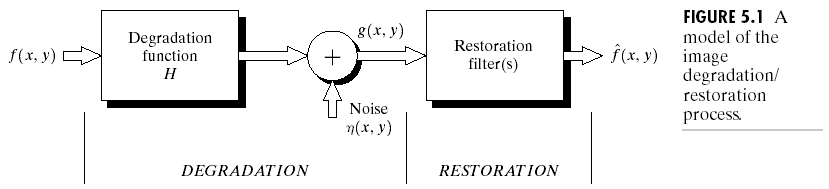
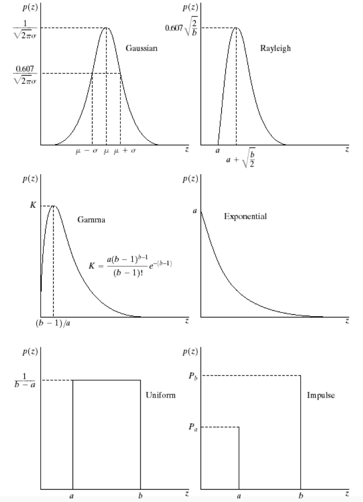
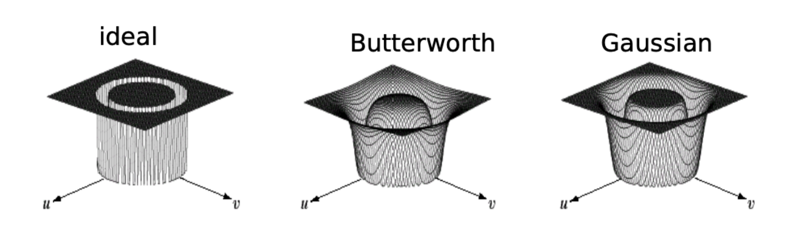
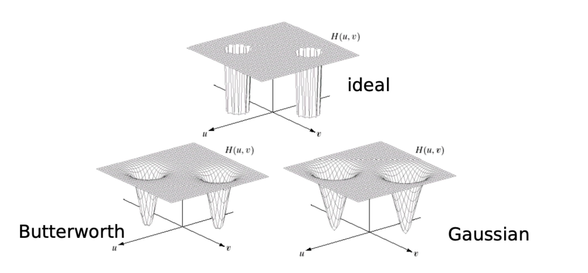
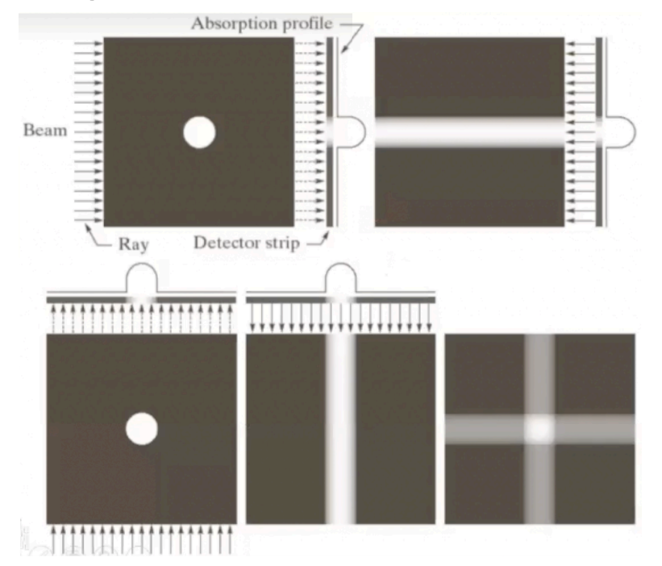
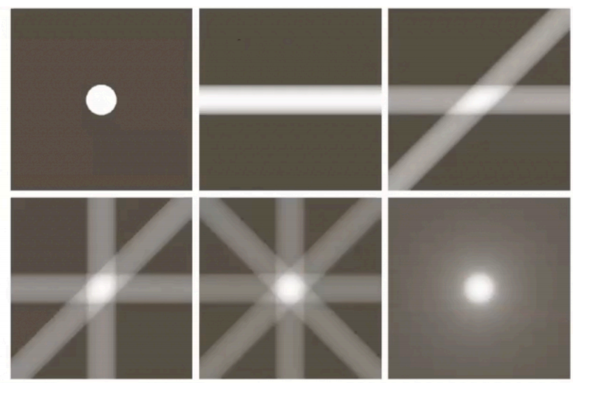

数字图像处理(5)：图像复原
Last updated on December 30, 2025 pm
这是SJTU-CS3324《数字图像处理》课程的知识点整理系列。本文整理部分为“第 5 章：图像复原”。
图像复原的目标与基本概念
- 图像复原的目标: 提升图像质量（可以是主观的或客观的）
- 图像增强与图像复原的区别:
- 图像增强 (Image Enhancement):
- 主观性 (Subjective): 这是一个主观的过程，目的是让处理后的图像在视觉上更适合于某个特定应用
- 无先验模型: 通常不考虑图像是如何“变坏”的，没有一个具体的退化模型
- 图像复原 (Image Restoration):
- 客观性 (Objective): 这是一个客观的过程，试图将退化（degraded）的图像恢复到其原始状态
- 基于先验模型: 图像复原试图对退化过程进行建模，需要事先知道（或估计出）图像退化的原因，例如模糊的类型、噪声的统计特性等
- 逆过程: 复原可以看作是退化过程的逆向操作 (reverse of the degradation)
- 图像增强 (Image Enhancement):
A. 图像退化/复原过程的模型 (Model of the Image Degradation/Restoration Process)

模型结构
- 退化过程 (DEGRADATION):
- 原始的、清晰的图像 首先经过一个退化函数 （Degradation function）的处理
- 这个函数 H 模拟了造成图像质量下降的各种因素，最典型的是模糊
- 然后，一个与图像内容无关的噪声项 （Noise）以加性的方式被引入
- 最终得到我们观察到的、质量下降的图像
- 原始的、清晰的图像 首先经过一个退化函数 （Degradation function）的处理
- 复原过程 (RESTORATION):
- 将退化图像 输入到一个或多个复原滤波器（Restoration filter(s)）中
- 滤波器的目标是产生一个对原始图像的最佳估计
- 理想情况下，我们希望 尽可能地接近
模型的数学表示
- 通用形式:
- 线性、位置不变 (LPI) 系统下的简化: 如果退化函数 是一个线性、位置不变 (Linear, Position-Invariant, LPI) 的系统，模型可以被大大简化
- 空间域 (Spatial Domain): 当 是 LPI 系统时，退化过程在空间域表现为卷积
- 频率域 (Frequency Domain): 根据卷积定理，空间域的卷积等价于频率域的乘法
- 空间域 (Spatial Domain): 当 是 LPI 系统时，退化过程在空间域表现为卷积
B. 噪声模型与噪声去除 (Noise Model & Noise Reduction)
这一部分聚焦于退化模型中的噪声项 ，探讨它的来源、数学模型以及如何去除它。
噪声的来源与分类
- 主要来源:
- 图像采集 (Image Acquisition): 图像传感器的性能和工作环境是噪声的主要来源，例如电路噪声、传感器因光照不足或温度过高产生的噪声
- 图像传输 (Image Transmission): 图像在信道中传输时，可能会受到电磁干扰等，从而引入噪声
- 分类及处理方法:
- 随机噪声: 当退化只有噪声时（ 为单位算子），主要使用空间滤波 (Spatial Filtering) 来处理
- 周期噪声: 主要使用频率域滤波 (Frequency Domain Filtering) 来处理
随机噪声的数学模型 (Noise Models for Random Noise)
- 基本假设:
- 噪声在空间上是独立的（周期噪声除外），并且与图像内容本身也无关
- 噪声被看作是随机变量，其特性可以通过其概率密度函数 (Probability Density Function, PDF) 来描述

- 常见的噪声 PDF 模型:
- 高斯噪声 (Gaussian Noise):
- 成因:来源于电子电路噪声、传感器在光照不足或高温下的噪声
- PDF: 呈经典的钟形曲线
- 瑞利噪声 (Rayleigh Noise):
- 成因: 主要用于描述距离图像 (range imaging) 中的噪声
- PDF: 是向右偏斜的
- 爱尔兰(伽马)噪声 (Erlang (Gamma) Noise) & 指数噪声 (Exponential Noise):
- 成因: 常用于描述激光成像中的噪声
- PDF: 都是向右偏斜的，指数噪声是伽马噪声的一个特例
- 均匀噪声 (Uniform Noise):
- 成因: 来源于量化过程中的误差。
- PDF: 在某个范围内，每个灰度值出现的概率是均等的
- 脉冲噪声(椒盐噪声) (Impulse (Salt-and-Pepper) Noise):
- 成因: 由快速的瞬时干扰引起
- PDF: 只有两个值（通常是 0 和 255），表现为图像中的纯黑点（“胡椒”）和纯白点（“盐”）
- 高斯噪声 (Gaussian Noise):
周期噪声 (Periodic Noise)
- 成因: 主要来源于图像采集过程中电力或机电设备的干扰
- 特性:
- 空间依赖性 (Spatial Dependence): 与随机噪声不同，周期噪声在空间上不是独立的，而是呈现周期性重复的模式
- 频域表现: 周期噪声在频率域表现得非常明显，通常是在频谱图上出现成对的、孤立的亮点（脉冲）
噪声参数的估计 (Estimation of Noise Parameters)
- 目的: 为了选择合适的滤波器并设置其参数，我们需要估计出图像中噪声的统计特性，如均值、方差等
- 估计方法:
- 周期噪声: 直接观察图像的频谱图 (Frequency Spectrum)，找到其中的亮点，即可确定其频率和方向
- 随机噪声:
- 情况1：成像系统可用: 拍摄一张“平坦”环境的图像，理论上该图像所有像素值应相同，实际的波动就完全由噪声引起，直接分析这张噪声图像的直方图和统计量即可
- 情况2：只有带噪图像: 在带噪图像中，选取一小块内容相对恒定的区域（即图像本身的灰度变化很小），然后分析这个小块的直方图
- 这个小块的直方图形状可以近似看作是噪声的 PDF，通过计算这个小块的均值和方差，就可以估计出噪声的参数
仅有加性噪声时的复原 - 空间滤波
当退化模型简化为 时，可以使用各种空间滤波器来抑制噪声 ，这些技术与上一章“图像增强”中的平滑滤波非常相似。
- 均值滤波器 (Mean Filters): 算术均值滤波器、几何均值滤波器、谐波均值滤波器、逆谐波均值滤波器
- 顺序统计滤波器 (Order-statistics Filters): 中值滤波器、最大/最小值滤波器、中点滤波器、阿尔法截尾均值滤波器
- 自适应滤波器 (Adaptive Filters): 滤波器的行为会根据邻域的局部统计特性进行自适应调整
周期噪声的去除 - 频率域滤波
由于周期噪声在频谱图上表现为成对的、关于原点共轭对称的亮点，因此可以在频率域精确地将其滤除。
- 带阻滤波器 (Bandreject Filters): 拒绝一个以频率原点为中心的、特定频率范围内的信号通过
- 如理想、巴特沃斯 (Butterworth) 和高斯 (Gaussian) 三种类型的带阻滤波器，它们可以在以原点为中心的环形区域内抑制频率分量

-
带通滤波器 (Bandpass Filters): 带阻滤波器的反操作，它只允许特定频率范围内的信号通过
- 带通滤波器 可以由带阻滤波器 通过 得到
-
陷波滤波器 (Notch Filters): 带阻滤波器的推广，它可以在频谱图的任意位置定义一个中心频率点，并抑制（或通过）该中心点周围的一个小邻域内的频率

线性、位置不变的退化 (Linear, Position-Invariant Degradations)
这部分我们聚焦于退化模型中的退化函数 ，考虑一种特殊的退化——线性、位置不变的退化。
- 线性 (Linear):
- 位置不变 (Position-Invariant): 退化效果与图像内容的位置无关，在 A 处造成的模糊和在 B 处造成的模糊是完全一样的
- 数学上讲，如果对输入的平移会导致输出产生完全相同的平移，那么该系统就是位置不变的
其中 是任意的空间位移
- 数学上讲，如果对输入的平移会导致输出产生完全相同的平移，那么该系统就是位置不变的
- 将退化过程表达为卷积: 当 是 LPI 系统时，退化过程在空间域表现为卷积，频率域表现为乘法
其中 是退化函数 的脉冲响应，也称为点扩散函数 (Point Spread Function, PSF)，它描述了系统对一个单位点光源的响应，即一个理想的点光源在经过退化系统后会变成什么样子
D. 连续图像的复原 (Restoration for Continuous Images)
- 核心问题: 给定观察到的退化图像 ，以及退化模型 ，并且我们对退化函数 和噪声 的统计特性有所了解，我们的目标是找到原始图像 的一个最优估计
- 病态问题 (Ill-conditioned Problem): 图像复原在数学上是一个典型的病态问题，这意味着解可能不存在、不唯一
逆滤波 (Inverse Filtering)
逆滤波是最直接、最直观的复原方法。
- 思想: 从频率域的退化模型 出发
- 推导:
- 首先做一个理想化的假设：不存在噪声，即 ，模型简化为
- 直接通过代数运算求解 :
- 最后，通过傅里叶逆变换得到复原后的图像估计：
- 首先做一个理想化的假设：不存在噪声，即 ，模型简化为
- 过程: 这个过程可以看作是将退化图像 通过一个传递函数为 的“逆”滤波器
- 缺陷:
- 对噪声极其敏感: 现实中噪声 总是存在的，除法操作 会变成 ，而退化函数 在高频区域的值会非常小，这会导致 项变得非常大，极大地放大了噪声
- 为零的问题: 如果 在某些频率上恰好为零，那么除法将无法进行，信息在这些频率上已经丢失
维纳滤波 (Wiener Filtering)
维纳滤波是一种更先进、更实用的方法，它克服了逆滤波对噪声敏感的缺点。
- 思想: 维纳滤波不再追求对 的精确还原，而是在存在噪声的情况下，寻找一个最优的估计
- 优化目标: 其优化准则是最小化均方误差 (Minimum Mean Square Error, MMSE)，即使得估计图像 与原始图像 之间的差的平方的期望值最小：
- 维纳滤波器的表达式: 通过变分法推导，可以得到维纳滤波器在频率域的表达式：
其中各项的定义为：
- : 退化函数（的傅里叶变换）
- : 退化函数的功率谱，是 的复共轭
- : 噪声的功率谱
- : 原始图像的功率谱
- 特点与优势:
- 自适应性: 维纳滤波器是自适应的。方括号中的项 […] 是一个调节因子：
- 当信噪比 很高时， 接近于0，整个表达式趋近于逆滤波 ，此时以去模糊为主
- 当信噪比很低时， 很大，分母变得很大，导致整个表达式的值趋近于0，从而抑制了噪声的放大
- 需要先验知识: 维纳滤波需要我们事先估计出噪声的功率谱 和原始图像的功率谱 ，这在实际应用中往往是困难的
- 与逆滤波的关系: 如果噪声为零 ，维纳滤波退化为逆滤波
- 自适应性: 维纳滤波器是自适应的。方括号中的项 […] 是一个调节因子：
E. 离散图像的复原 (Restoration for Discrete Images)
离散退化模型 (Degradation Models of Discrete Images)
- 思想: 将连续域的积分和函数，用离散域的求和与矩阵来表示
- 模型表示:
- 空间域: 连续的卷积运算变为离散卷积，这个过程可以用矩阵和向量的乘法来表示，即通过堆叠 (Stacking) 将图像和卷积核矩阵化
- 频率域: 离散傅里叶变换下，卷积定理依然成立
- 空间域: 连续的卷积运算变为离散卷积，这个过程可以用矩阵和向量的乘法来表示，即通过堆叠 (Stacking) 将图像和卷积核矩阵化
逆滤波 (Inverse Filtering)
- 思想: 与连续域完全相同，即在频率域直接做除法，但在离散情况下，我们通常从最小化代价函数 的角度来推导
- 推导:
- 假设无噪声，退化图像 与复原图像 经过同样退化 后的差 的范数（能量）应最小
- 对 求导并令其为零，可以解出：
- 假设无噪声，退化图像 与复原图像 经过同样退化 后的差 的范数（能量）应最小
- 问题: 对噪声极其敏感
维纳滤波 (Wiener Filtering)
- 思想与优化目标: 与连续域相同，目标是最小化均方误差
- 离散域下的公式: 最终得到的频率域滤波器表达式与连续情况完全一致
- 挑战: 需要预先知道或估计噪声功率谱 和原始图像功率谱
约束最小二乘滤波 (Constrained Least Squares Filtering)
- 思想: 维纳滤波需要知道噪声和图像的谱，这在实践中很难，我们能否找到一种只需要少量先验知识的复原方法？约束最小二乘法的思想是，我们希望找到一个解 ，它在满足某个约束条件的同时，使某个目标函数最小化
- 优化目标与约束:
- 目标函数: 我们希望复原后的图像 具有一定的平滑性，一个衡量图像平滑度的常用指标是其拉普拉斯算子的能量 。因此，我们的目标是最小化 ，其中 是拉普拉斯算子
- 约束条件: 复原后的图像 经过退化 后，与原始退化图像 之间的残差 应该约等于噪声 。因此，我们约束这个残差的能量等于我们估计出的噪声能量
- 求解与公式: 通过拉格朗日乘子法求解这个约束优化问题，可以得到频率域下的解
其中 是拉格朗日乘子，需要迭代调整以满足约束条件， 是拉普拉斯算子的傅里叶变换
图像重建 (Image Reconstruction)
基本概念与方法
-
核心问题: 图像重建的目标是从物体的投影 (Projections) 数据来重建物体内部的切片 (Slice) 图像
-
基本方法: 反投影 (Back-Projection)
- 获取投影: 在一个特定角度，用一束平行的射线穿过物体，探测器在另一侧测量每条射线的衰减，形成一个一维的吸收剖面
- 反投影操作: 将这个一维的吸收剖面数据“涂抹”回一个二维的图像空间
- 具体来说，将探测器上某个点的值，赋给穿过该点的整条射线路径上的所有像素
- 多角度累加: 旋转射线源和探测器，获取一个新的投影，并将其反投影结果与之前的图像进行累加
- 结果演进: 随着投影角度的增加，重建图像中物体的位置和形状会越来越清晰


-
物理与数学原理:
- X 射线衰减: X 射线的能量在穿过物体时会呈指数级衰减
- 密度定义: 为了将乘性的衰减关系转换为更易于处理的加性关系，定义密度 为初始射线强度与透射后强度之比的对数
- 线积分: 经过对数变换后，沿一条射线路径的总密度（即总衰减），等于该路径上每一点衰减系数的线积分
- 重建目标: 图像重建就是利用从不同角度 和位置 测量到的投影数据，来反向求解出代表组织内部衰减系数分布的切片图像
- Radon 变换: 一个函数 在不同角度下的线积分的集合，在数学上被称为 Radon 变换，CT 重建的本质就是求解 Radon 变换的逆变换
-
病态问题 (Ill-conditioned Problem): 图像重建是一个数学上的病态问题
- 仅有有限的投影数据，可能无法唯一确定原始的图像
- 需要引入更多的扫描线或其他先验约束（如平滑性）来获得一个稳定、合理的解
-
主要重建方法:
- 代数重建技术 (Algebra Reconstruction Techniques): 第一代 CT 使用的方法
- 傅里叶变换技术 (Fourier Transform Techniques): 在理论上很直观，但在实践中不可行
- 滤波反投影 (Filtered Back-Projection): 当前的技术标准，通过在反投影之前，先对每一组一维投影数据进行一次一维滤波，有效地消除了简单反投影带来的模糊和伪影，能够重建出高质量的图像
医学成像技术简介 (Medical Imaging Techniques)
CT (电子计算机断层扫描 - Computerized Tomography)
- 基本原理: 通过从多个角度发射 X 射线穿过身体，并测量穿透后的射线强度，然后通过计算机算法来重建身体内部的横截面图像
- 工作流程:
- 一个 X 射线源和一个探测器阵列环绕着被检测物体（病人）
- X 射线源发射一束窄射线，穿过物体，被另一端的探测器接收
- X 射线源和探测器同步旋转一个小的角度
- 重复步骤2和3，直到完成至少 180 度的扫描，从而获得一系列在不同角度下的投影数据
- 使用断层扫描算法（Tomography algorithms）处理这些投影数据，重建出代表物体内部一个“切片”的图像
- 通过在垂直于扫描环的方向上移动物体，可以获得一系列的切片图像，最终构成三维的内部结构
- 功能:
- 可以精确显示肿瘤的位置、形状，以及它是实性的还是囊性的
- 能为判断肿瘤是否为恶性提供线索，但最终确诊仍需活检（biopsy）
- 扫描流程:
- 通常在扫描前需要服用或注射造影剂 (contrast medium)
- 病人躺在可移动的扫描床上，扫描床穿过一个环形的扫描仪，扫描仪会围绕病人旋转
- 一次扫描通常耗时 15-20 分钟
- 缺点:
- 对于尺寸小于 2 厘米的肿瘤，CT 的检测并不可靠
- 部分病人可能会觉得造影剂口感不佳
MRI (核磁共振成像 - Magnetic Resonance Imaging)
- 基本原理: MRI 不使用 X 射线，而是利用强大的磁场
- 强磁场使体内的原子（主要是氢原子）发生响应，设备检测这些原子发出的射频信号，并经过计算机分析处理后生成图像
- 功能与优势:
- 不使用 X 射线，避免了辐射暴露问题
- 在许多组织中，MRI 生成的图像和细节比 CT 更清晰，尤其是在软组织结构的成像方面
- 可以通过调整射频波和磁场来高亮显示不同类型的组织
- 可以在不移动病人的情况下，改变成像的平面（如横断面、矢状面、冠状面）
- MRI 使用的造影剂不含碘
- 扫描流程:
- 病人躺在扫描床上，滑入一个狭窄的圆筒状设备中
- 扫描过程中会听到巨大的噪声
- 扫描通常持续约 30 分钟
- 缺点:
- 在某些组织（如骨骼）的成像上，清晰度不如 CT
- 难以区分炎症、疤痕组织和肿瘤
- 体内有金属植入物（如心脏起搏器）的病人不能使用
- 对有幽闭恐惧症的病人来说体验不佳
- 比 CT 更昂贵
PET (正电子发射断层扫描 - Positron Emission Tomography)
- 基本原理: PET 是一种功能成像技术，它使用放射性的正电子示踪剂来检测身体内不同区域的代谢和化学活动的差异
- 代谢活动增强的区域会在彩色的PET图像上显示为“热点”
- 与 CT/MRI 的区别:
- CT 和 MRI 关注的是身体的结构 (structures)
- PET 关注的是身体的功能 (function)
- 功能与优势:
- 由于癌细胞通常比正常细胞分裂和代谢更快，它们在 PET 扫描上会表现为高代谢活性区域
- 能够探测到非常微小的活性区域，远小于 CT 和 MRI 的探测极限
- 非常擅长区分几乎没有代谢活动的疤痕组织和高代谢的肿瘤组织
- 扫描流程:
- 病人躺在环形的扫描仪上。
- 通过吸入或静脉注射的方式，将具有短暂半衰期的放射性示踪剂注入体内
- 整个过程可能需要 30 分钟到两小时
- 缺点:
- 图像清晰度不如 CT 和 MRI，有时难以精确定位高活性区域
- 由于炎症区域在 PET 上也会显示为“热点”，大量的炎症可能会掩盖其他的异常活动
- 对于分化程度较高的肿瘤，由于其代谢活性较低，PET 的检测效果会变差
- 非常昂贵，直到最近主要还被用作研究工具
- CT-PET: 一种结合了 CT 和 PET 技术的新型扫描方式，将反映功能的PET图像和反映解剖结构的CT图像叠加在一起
- 获得了 CT 提供的精确解剖细节
- 获得了 PET 提供的发现微小癌细胞团的能力
参考资料
本文参考上海交通大学电子工程系《数字图像处理》课程 CS3324 闵雄阔老师的 PPT 课件整理。